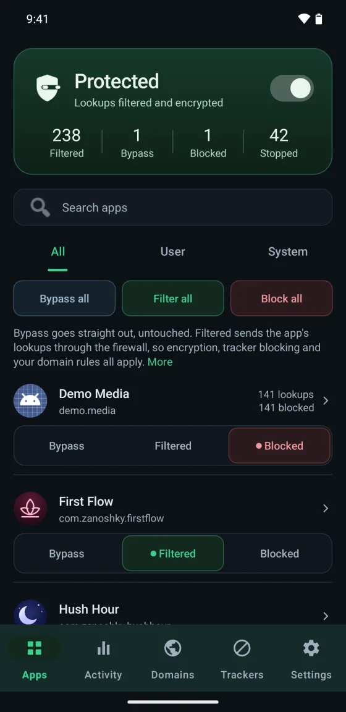
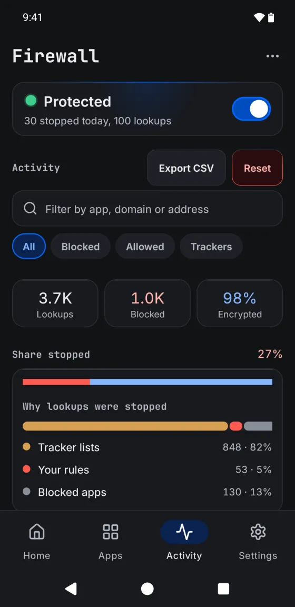
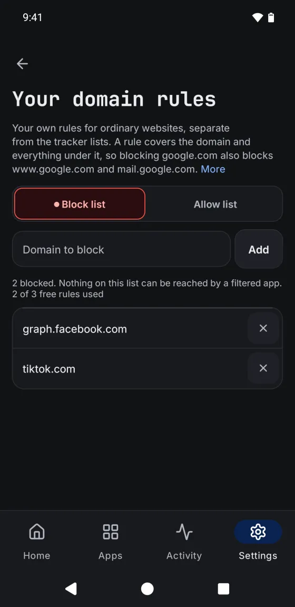
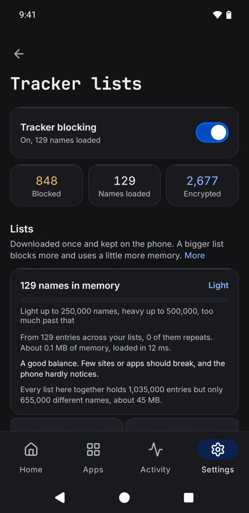

User guide
Firewall
A firewall for Android that needs no root, with tracker blocking, DNS over HTTPS, and a log of everything your phone looks up. You decide, app by app, what the firewall does with it. Free, with an optional Pro.



